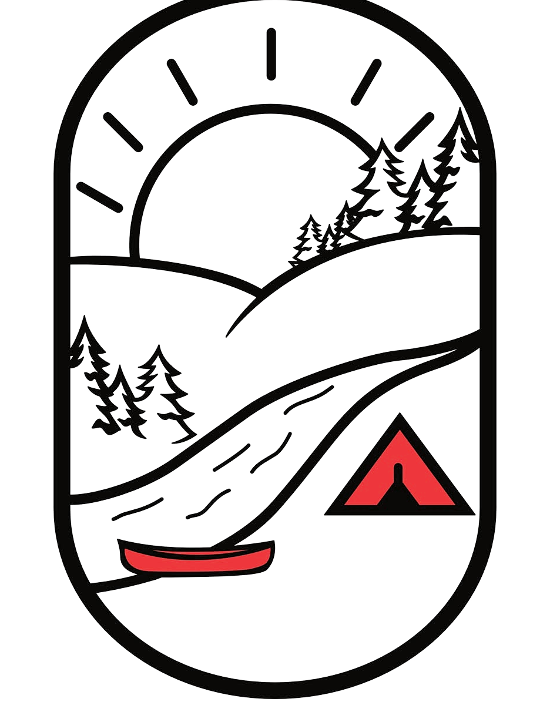
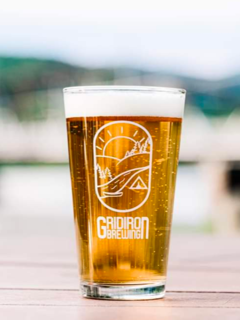
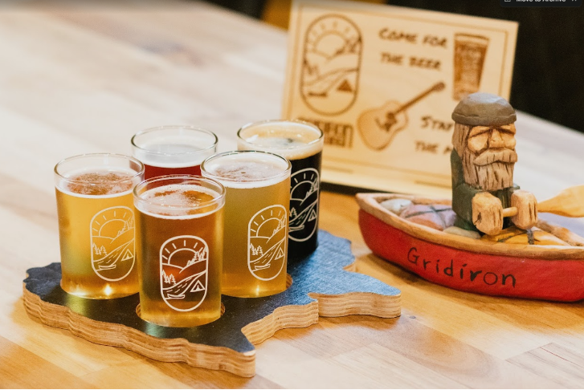

Valley
Lager
Lager
Helles Lager
Valley Lager
Crisp, clean, and endlessly drinkable. The one that started it all.
ABV4.8%
IBU18
Flagship
Small-Batch Craft Beer · Hampton, NBSmall-batch craft beer brewed in Hampton, New Brunswick — local ingredients, global inspiration, poured fresh on the shores of the Kennebecasis. Paddle in, hike down, or just pull up a chair.

Gridiron is named after the Gridiron rapids near a family homestead — a stretch of the Kennebecasis that's been part of our story for generations. The beer is rooted in that place, crafted with a deep respect for where we come from and the community we're part of.
We focus on small-batch craft beer using local New Brunswick and Canadian ingredients whenever possible, complemented by quality ingredients sourced from around the world.
Crisp, clean, and endlessly drinkable. The one that started it all.
Toffee malt with a whisper of hops. Smooth as a worn handle.
Pine, grapefruit, and a resinous bite. Built for hopheads.
Roasted coffee and dark chocolate. Named for the river out back.
Twelve taps poured fresh, food trucks on the weekend, live music, and a laid-back patio over the river. Whether you're here for a show or just stopping in, there's always something new on tap — kids and dogs welcome till close.

Something on most nights we're open. Live music every weekend, trivia midweek, and the occasional cask night. Always free to get in.
East-coast folk & fiddle. Loud, fast, and a little sweaty.
Six rounds, daft prizes, free pints for the winners.
One firkin, hand-pulled, gone when it's gone. Get in early.
Sunset set on the river patio. Bring a sweater.
From live music to workshops to everyday visits, you've made this more than a place to grab a drink — you've made it a place to belong. That's what truly defines us.